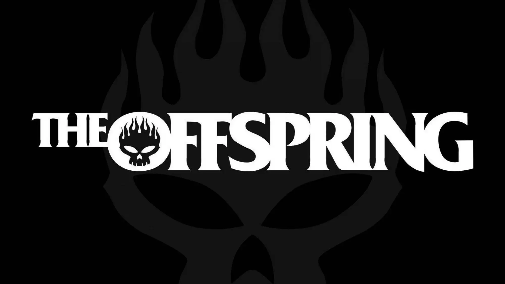

Description du groupe
The Offspring est un groupe de punk rock américain originaire de Garden Grove, en Californie , formé en 1984. Initialement formé sous le nom de Manic Subsidal.
C'est en 1986 que le groupe change de nom pour The Offspring.
- le chanteur et guitariste Dexter Holland (de son vrai nom Bryan Holland)
- le bassiste Greg K. (de son vrai nom Greg Kriesel)
- Le guitariste principal Noodles (de son vrai nom Kevin Wasserman ; depuis 1985)
- le batteur James Lilja entre 1984 et 1987.
- Morse est devenu guitariste rythmique pour les Offspring en 2009 lors des tournées. En 2012, Morse a fait les chœurs pour l'album Days Go By des Offspring. En 2019, Morse a remplacé le bassiste et membre fondateur d'Offspring, Greg K. , et est devenu un membre officiel du groupe.
- Le bassiste Todd Morse (depuis 2019, et des guitares rythmiques de tournée de 2009 à 2019)
- Le multi-instrumentiste Jonah Nimoy (depuis 2023, en tant que musicien de tournée de 2019 à 2023)
- le batteur Brandon Pertzborn (depuis 2023)
En discographie, le groupe a réalisé dix albums.